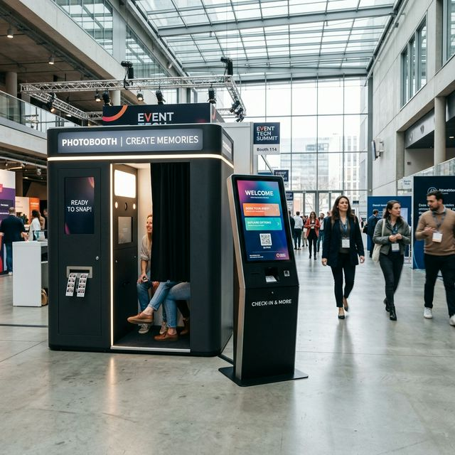

Stop met het handmatig controleren van uw apparaten. AutoDash geeft u live inzicht in statussen, verkopen, en foutmeldingen van al uw verspreide systemen op één centrale plek.
Toegankelijk · Schaalbaar · Altijd verbonden
Wanneer u tientallen of honderden systemen (zoals photobooths, kiosken of vending machines) op locatie heeft staan, verliest u al snel het overzicht. Apparaten staan uit, papier is op, of internet is weg. Zonder centraal inzicht kost beheer onnodig veel tijd, geld en omzet.
U komt er pas achter dat een systeem down is wanneer de klant klaagt. Dat kost u directe omzet en reputatieschade.
Omzet checkt u in portaal A, foutmeldingen in portaal B, en locaties staan in een losse Excel lijst.
Klantaccounts aanmaken? Per apparaat toegangsrechten uitdelen? Met losse systemen is dit vrijwel onmogelijk.
AutoDash trekt alle hardware communicatie naar één overzichtelijk, web-based platform. Zo kunt u vanaf elke PC of smartphone uw vloot controleren en beheren.
Bekijk in één oogopslag de live locaties van uw hardware. Kleurcodes (groen, oranje, rood) geven direct de status aan.
Koppel betaalterminals en bekijk direct welke locaties het best presteren, zonder externe portalen in te hoeven duiken.
Herstart systemen, schakel ze in of uit, en stuur firmware updates met één druk op de knop vanuit het dashboard.
Maak unieke accounts aan voor úw klanten, zodat zij de statussen en media van uitsluitend hún toegewezen apparaten zien.
Wanneer een printer bijna geen inkt of papier meer heeft, of als er een internetstoring is, krijgt u proactief een waarschuwing vóórdat de gasten er last van hebben.
Alles op één plek betekent geen tijdverlies meer met inloggen in verschillende portals. U beheert uw gehele hardware vloot vanuit één inlogscherm.
Of u nu 5 apparaten heeft of 500: het platform groeit met u mee. Van remote beheer tot gedetailleerde gebruikersrollen, het is direct beschikbaar.

Een typisch vraagstuk: Een verhuurbedrijf heeft 30 photobooths op verschillende feestlocaties staan. Vroeger moesten ze wachten tot de fotograaf belde dat het papier op was.
Met de AutoDash software integratie hebben ze nu: